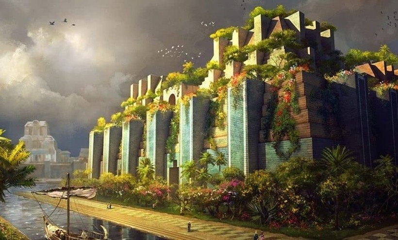

Висячие сады Семирамиды — одно из самых загадочных чудес света. Согласно преданию, были созданы царём Навуходоносором II для своей жены Амитис, которая тосковала по зелёным горам своей родины — Мидии.
Сады представляли собой многоярусное террасное сооружение с пышной растительностью, деревьями и цветами. Для орошения использовалась сложная система водоподъёмных механизмов, поднимавших воду из Евфрата.
Интересно, что существование садов до сих пор остаётся предметом споров среди учёных — никаких археологических подтверждений обнаружено не было. Некоторые исследователи полагают, что сады могли быть поэтическим вымыслом или существовали лишь в легендах.
Если сады действительно существовали, они были инженерным чудом: многоуровневые террасы требовали сложной системы водоснабжения, которая поднимала воду на высоту до 25 метров. Это было бы невозможно без передовых для того времени технологий.